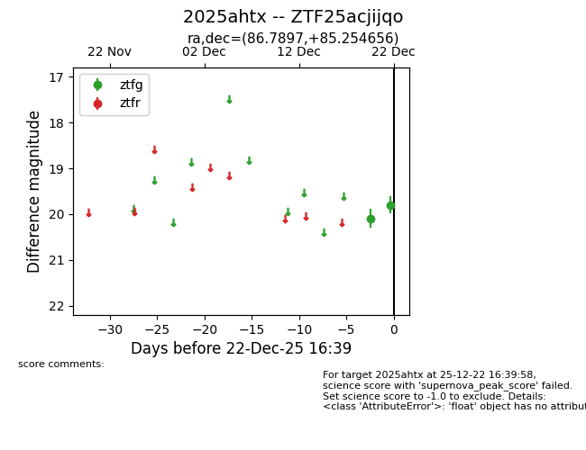
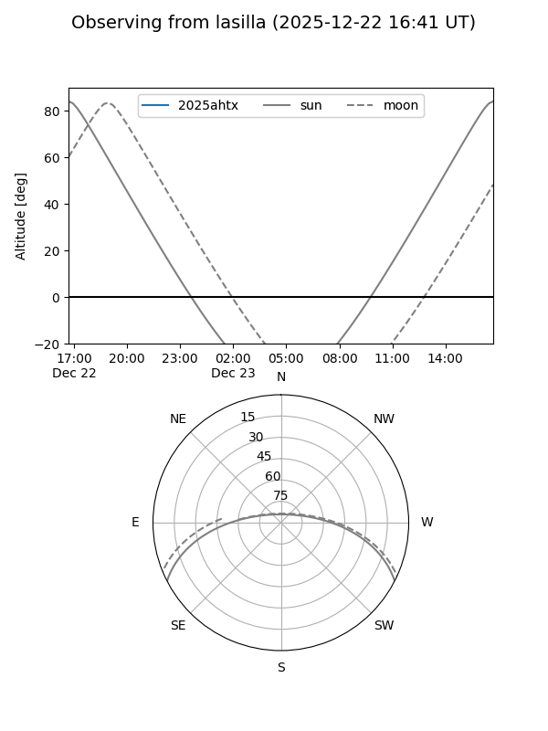
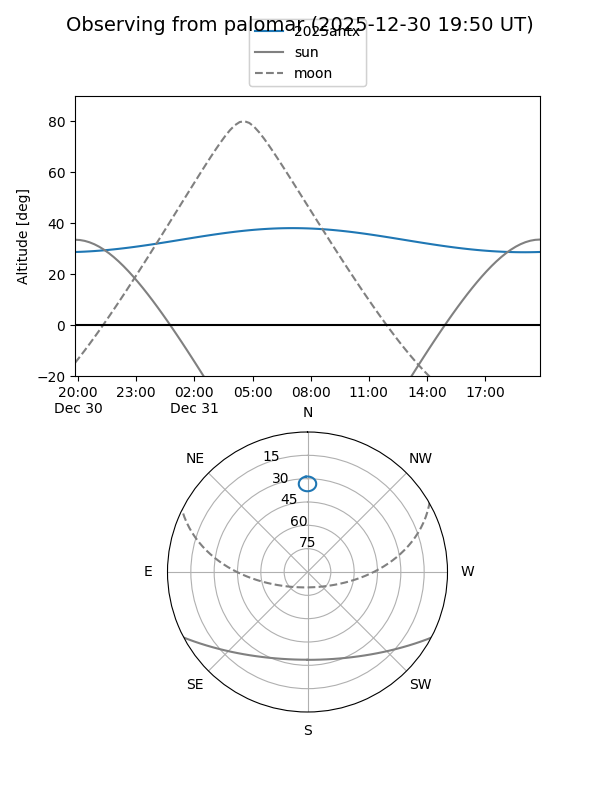

2025ahtx
Target 2025ahtx at 2026-01-09 12:49
Aliases and brokers:
FINK: link
Lasair: link
ALeRCE: link
TNS: link
YSE: link
alt names
ZTF25acjijqo (ztf,fink_ztf)
2025ahtx (tns,yse)
Coordinates:
equatorial (ra, dec) = 86.7897,+85.25466
equatorial (HMS+DMS) = 05:47:09.53,+85:15:16.76
galactic (l, b) = (127.9943,+25.72425)
Flags:
Photometry:
last ztfg=19.80, ztfr=19.84
2 ztfg, 1 ztfr detections
Lightcurve

Visibility


Additional plots